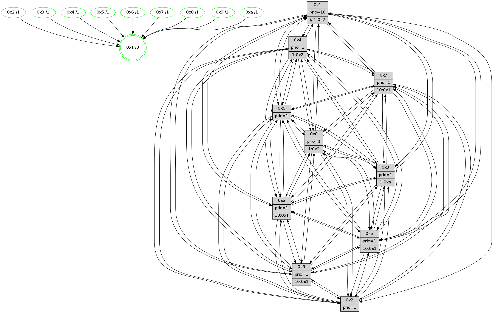

>> << IDX [start] -100 -25 -5 +0 +5 +25 +100 [1065.19354701]
 Previous packets
----------------------------------------------------------------------
1060.464764 beacon01(faad) #0 coord=01,02,03,04,05,06,07,0a,09,08 cycle=688.0ms assoc
-- color-indic=1 64 3d 41
1060.474747 beacon02(faad) #0 coord=01,02,03,04,05,06,07,0a,09,08 cycle=688.0ms assoc 64 ae 70
1060.484746 beacon03(faad) #0 coord=01,02,03,04,05,06,07,0a,09,08 cycle=688.0ms assoc 64 d4 3d
1060.494749 beacon04(faad) #0 coord=01,02,03,04,05,06,07,0a,09,08 cycle=688.0ms assoc 64 a3 d7
1060.504748 beacon05(faad) #0 coord=01,02,03,04,05,06,07,0a,09,08 cycle=688.0ms assoc 64 d9 9a
1060.514748 beacon06(faad) #0 coord=01,02,03,04,05,06,07,0a,09,08 cycle=688.0ms assoc 64 57 4d
1060.524749 beacon07(faad) #0 coord=01,02,03,04,05,06,07,0a,09,08 cycle=688.0ms assoc 64 2d 00
1060.534751 beacon0a(faad) #0 coord=01,02,03,04,05,06,07,0a,09,08 cycle=688.0ms assoc 64 5c 0b
1060.544752 beacon09(faad) #0 coord=01,02,03,04,05,06,07,0a,09,08 cycle=688.0ms assoc 64 d2 dc
1060.554754 beacon08(faad) #0 coord=01,02,03,04,05,06,07,0a,09,08 cycle=688.0ms assoc 64 a8 91
1060.566292 [Hello(10): seq=610 sym=6,2,3,8,7,5,9,4,1 sysInfo=hasWarning stat=6:7,10,10,4/2:11,12,0,7/3:0,5,1,10/8:8,14,4,0/7:8,14,9,4/5:1,9,10,14/9:10,6,11,1/4:3,5,12,8/1:11,15,4,1]
1060.569636 [Hello(8): seq=621 sym=5,2,3,4,9,6,7,10,1 sysInfo=hasWarning stat=5:5,0,11,0/2:3,2,6,7/3:0,2,10,14/4:10,3,2,9/9:9,10,11,2/6:7,9,9,11/7:9,15,9,2/10:1,14,13,3/1:8,4,11,0]
1060.572105 [Color(1) seq=358 @0:0 prio=10 >>1.@2,1.@3,1.@4]
1060.575080 [Hello(7): seq=677 sym=2,3,5,6,4,8,10,1 sysInfo=hasWarning stat=2:14,8,13,14/3:5,5,11,14/5:7,5,13,1/6:11,6,10,7/4:0,1,0,0/8:12,10,7,1/10:8,14,14,4/1:3,3,14,0]
1060.578877 [Color(5) seq=284 @0:0 prio=1 >10.@1,1.@2,1.@3,1.@4]
1060.581282 [Hello(4): seq=677 sym=5,7,6,2,3,9,8,10,1 sysInfo= stat=5:5,13,7,14/7:11,3,6,9/6:5,1,4,10/2:8,0,1,11/3:8,14,4,10/9:3,9,11,9/8:0,5,10,4/10:7,10,13,12/1:12,11,13,1]
1060.585559 [Color(2) seq=282 @0:0 prio=1]
1060.586798 [Color(4) seq=257 @0:0 prio=1 >1.@2,1.@3,1.@5,1.@6]
1060.590832 [Color(7) seq=236 @0:0 prio=1 >10.@1,1.@2,1.@3,1.@5]
1060.592525 [Hello(9): seq=621 sym=2,5,3,4,7,6,8,10,1 sysInfo=hasWarning stat=2:13,0,4,4/5:3,13,3,5/3:14,0,6,14/4:1,2,1,0/7:0,4,4,10/6:12,13,13,9/8:8,12,7,3/10:12,5,8,3/1:1,9,13,1]
1060.597606 [Color(9) seq=283 @0:0 prio=1 >10.@1,1.@2,1.@3,1.@5]
----------------------------------------------------------------------
1061.252895 beacon01(faad) #0 coord=01,02,03,04,05,06,07,0a,09,08 cycle=688.0ms assoc
-- color-indic=1 64 09 59
1061.262878 beacon02(faad) #0 coord=01,02,03,04,05,06,07,0a,09,08 cycle=688.0ms assoc 64 9a 68
1061.272878 beacon03(faad) #0 coord=01,02,03,04,05,06,07,0a,09,08 cycle=688.0ms assoc 64 e0 25
1061.282878 beacon04(faad) #0 coord=01,02,03,04,05,06,07,0a,09,08 cycle=688.0ms assoc 64 97 cf
1061.292879 beacon05(faad) #0 coord=01,02,03,04,05,06,07,0a,09,08 cycle=688.0ms assoc 64 ed 82
1061.302878 beacon06(faad) #0 coord=01,02,03,04,05,06,07,0a,09,08 cycle=688.0ms assoc 64 63 55
1061.312881 beacon07(faad) #0 coord=01,02,03,04,05,06,07,0a,09,08 cycle=688.0ms assoc 64 19 18
1061.322884 beacon0a(faad) #0 coord=01,02,03,04,05,06,07,0a,09,08 cycle=688.0ms assoc 64 68 13
1061.332884 beacon09(faad) #0 coord=01,02,03,04,05,06,07,0a,09,08 cycle=688.0ms assoc 64 e6 c4
1061.342883 beacon08(faad) #0 coord=01,02,03,04,05,06,07,0a,09,08 cycle=688.0ms assoc 64 9c 89
1061.354114 [Hello(1): seq=587 sym=4,2,9,5,10,3,8,6,7 sysInfo=coloring-mode-on,ColoringModeRequestCalled stat=4:4,4,8,2/2:5,15,7,13/9:14,11,6,6/5:8,11,0,7/10:11,7,9,5/3:3,9,13,5/8:11,10,7,1/6:14,8,7,11/7:15,13,7,12]
1061.357756 [Hello(2): seq=674 sym=4,5,7,6,3,9,8,10,1 sysInfo=hasWarning stat=4:15,14,11,8/5:3,0,1,0/7:0,1,9,11/6:3,13,1,9/3:1,14,1,7/9:9,13,3,5/8:5,8,13,9/10:11,15,4,10/1:6,10,13,1]
1061.360754 [Color(8) seq=300 @0:0 prio=1 >1.@2,1.@3,1.@5,1.@a]
1061.362506 [Hello(6): seq=678 sym=2,3,5,4,7,9,8,10,1 sysInfo= stat=2:1,8,8,3/3:12,10,8,10/5:12,9,7,0/4:0,2,0,3/7:6,0,8,9/9:1,1,8,6/8:14,6,3,3/10:1,15,12,12/1:10,10,12,1]
1061.366267 [Color(6) seq=310 @0:0 prio=1]
1061.367814 [Hello(5): seq=678 sym=7,6,4,3,1,9,8,10,2 sysInfo=hasWarning stat=7:10,3,13,11/6:9,10,13,0/4:11,3,7,10/3:8,7,2,12/1:12,12,15,1/9:7,6,8,7/8:14,3,3,0/10:3,14,1,7/2:13,7,8,3]
1061.372820 [Hello(3): seq=678 sym=1,7,6,2,4,8,9,10,5 sysInfo=hasWarning stat=1:10,3,8,0/7:12,2,0,9/6:11,15,15,3/2:11,10,3,13/4:0,9,6,9/8:11,10,15,2/9:9,8,5,12/10:11,1,2,3/5:0,11,12,14]
1061.376340 [Color(10) seq=267 @0:0 prio=1 >10.@1,1.@2,1.@3,1.@5]
1061.378303 [STC(1) #0.154 tree-change,inconsistent-stability,stable,to-color d=0]
1061.382196 [Color(3) seq=307 @0:0 prio=1 >1.@a]
----------------------------------------------------------------------
1062.041025 beacon01(faad) #0 coord=01,02,03,04,05,06,07,0a,09,08 cycle=688.0ms assoc
-- color-indic=1 64 b5 5c
1062.051007 beacon02(faad) #0 coord=01,02,03,04,05,06,07,0a,09,08 cycle=688.0ms assoc 64 26 6d
1062.061008 beacon03(faad) #0 coord=01,02,03,04,05,06,07,0a,09,08 cycle=688.0ms assoc 64 5c 20
1062.071007 beacon04(faad) #0 coord=01,02,03,04,05,06,07,0a,09,08 cycle=688.0ms assoc 64 2b ca
1062.081008 beacon05(faad) #0 coord=01,02,03,04,05,06,07,0a,09,08 cycle=688.0ms assoc 64 51 87
1062.091008 beacon06(faad) #0 coord=01,02,03,04,05,06,07,0a,09,08 cycle=688.0ms assoc 64 df 50
1062.101007 beacon07(faad) #0 coord=01,02,03,04,05,06,07,0a,09,08 cycle=688.0ms assoc 64 a5 1d
1062.111014 beacon0a(faad) #0 coord=01,02,03,04,05,06,07,0a,09,08 cycle=688.0ms assoc 64 d4 16
1062.121012 beacon09(faad) #0 coord=01,02,03,04,05,06,07,0a,09,08 cycle=688.0ms assoc 64 5a c1
1062.131015 beacon08(faad) #0 coord=01,02,03,04,05,06,07,0a,09,08 cycle=688.0ms assoc 64 20 8c
1062.143237 [STC(6)->1 #0.154 tree-change,inconsistent-stability,stable,to-color d=1]
1062.144863 [Hello(10): seq=611 sym=6,2,3,8,7,5,9,4,1 sysInfo=hasWarning stat=6:7,10,10,4/2:11,13,0,7/3:0,6,1,10/8:9,14,4,0/7:9,15,9,4/5:1,10,10,14/9:11,7,11,1/4:4,6,12,8/1:12,0,5,1]
1062.147580 [Hello(9): seq=622 sym=2,5,3,4,7,6,8,10,1 sysInfo=hasWarning stat=2:14,0,4,4/5:4,13,3,5/3:15,1,6,14/4:1,2,1,0/7:0,4,4,10/6:13,14,13,9/8:8,13,7,3/10:13,6,8,3/1:2,9,14,1]
1062.150079 [STC(10)->1 #0.154 tree-change,inconsistent-stability,stable,to-color d=1]
1062.155012 [STC(7)->1 #0.154 tree-change,inconsistent-stability,stable,to-color d=1]
1062.156929 [STC(4)->1 #0.154 tree-change,inconsistent-stability,stable,to-color d=1]
1062.158414 [Color(1) seq=359 @0:0 prio=10 >>1.@2,1.@3,1.@4]
1062.159967 [Color(7) seq=237 @0:0 prio=1 >10.@1,1.@2,1.@3,1.@5]
1062.165252 [Color(4) seq=258 @0:0 prio=1 >1.@2,1.@3,1.@5,1.@6]
1062.166935 [STC(9)->1 #0.154 tree-change,inconsistent-stability,stable,to-color d=1]
1062.170193 [STC(2)->1 #0.154 tree-change,inconsistent-stability,stable,to-color d=1]
1062.172148 [TreeStatus(2)-.->1 #0.154 tree-change,inconsistent-stability,stable child=1]
1062.173451 [Color(5) seq=285 @0:0 prio=1 >10.@1,1.@2,1.@3,1.@4]
1062.178571 [Color(2) seq=283 @0:0 prio=1]
1062.181744 [Hello(8): seq=622 sym=5,2,3,4,9,6,7,10,1 sysInfo=hasWarning stat=5:6,1,11,0/2:3,3,6,7/3:1,3,10,14/4:11,4,2,9/9:10,11,11,2/6:8,10,9,11/7:10,0,9,2/10:1,15,13,3/1:9,5,12,0]
1062.185825 [STC(8)->1 #0.154 tree-change,inconsistent-stability,stable,to-color d=1]
----------------------------------------------------------------------
1062.829156 beacon01(faad) #0 coord=01,02,03,04,05,06,07,0a,09,08 cycle=688.0ms assoc
-- color-indic=1 64 71 52
1062.839138 beacon02(faad) #0 coord=01,02,03,04,05,06,07,0a,09,08 cycle=688.0ms assoc 64 e2 63
1062.849139 beacon03(faad) #0 coord=01,02,03,04,05,06,07,0a,09,08 cycle=688.0ms assoc 64 98 2e
1062.859139 beacon04(faad) #0 coord=01,02,03,04,05,06,07,0a,09,08 cycle=688.0ms assoc 64 ef c4
1062.869139 beacon05(faad) #0 coord=01,02,03,04,05,06,07,0a,09,08 cycle=688.0ms assoc 64 95 89
1062.879140 beacon06(faad) #0 coord=01,02,03,04,05,06,07,0a,09,08 cycle=688.0ms assoc 64 1b 5e
1062.889141 beacon07(faad) #0 coord=01,02,03,04,05,06,07,0a,09,08 cycle=688.0ms assoc 64 61 13
1062.899145 beacon0a(faad) #0 coord=01,02,03,04,05,06,07,0a,09,08 cycle=688.0ms assoc 64 10 18
1062.909144 beacon09(faad) #0 coord=01,02,03,04,05,06,07,0a,09,08 cycle=688.0ms assoc 64 9e cf
1062.919146 beacon08(faad) #0 coord=01,02,03,04,05,06,07,0a,09,08 cycle=688.0ms assoc 64 e4 82
1062.930402 [Hello(1): seq=588 sym=4,2,9,5,10,3,8,6,7 sysInfo=coloring-mode-on,ColoringModeRequestCalled stat=4:4,5,8,2/2:5,0,8,14/9:14,11,7,6/5:8,12,0,7/10:12,7,9,5/3:3,10,13,5/8:12,10,8,1/6:14,8,8,11/7:15,14,7,12]
1062.933669 [Hello(5): seq=679 sym=7,6,4,3,1,9,8,10,2 sysInfo=hasWarning stat=7:10,3,13,11/6:9,10,14,0/4:11,3,7,10/3:9,8,2,12/1:12,12,0,1/9:7,6,8,7/8:15,3,4,0/10:4,15,1,7/2:13,8,8,3]
1062.936388 [Hello(3): seq=679 sym=1,7,6,2,4,8,9,10,5 sysInfo=hasWarning stat=1:11,4,8,0/7:13,3,1,9/6:11,15,0,3/2:11,11,4,14/4:0,10,7,9/8:12,10,0,2/9:10,8,6,12/10:12,1,3,3/5:0,12,12,14]
1062.939224 [Color(3) seq=308 @0:0 prio=1 >1.@a]
1062.941016 [Hello(2): seq=675 sym=4,5,7,6,3,9,8,10,1 sysInfo=hasWarning stat=4:15,14,11,8/5:4,0,1,0/7:0,1,9,11/6:4,14,2,9/3:2,15,1,7/9:9,13,3,5/8:6,9,14,9/10:12,0,4,10/1:6,10,14,1]
1062.943537 [Color(10) seq=268 @0:0 prio=1 >10.@1,1.@2,1.@3,1.@5]
1062.945899 [Hello(6): seq=679 sym=2,3,5,4,7,9,8,10,1 sysInfo= stat=2:1,9,9,4/3:13,11,8,10/5:13,10,7,0/4:0,3,1,3/7:7,1,9,9/9:2,1,9,6/8:15,6,4,3/10:2,0,13,12/1:11,11,13,1]
1062.949906 [Color(8) seq=301 @0:0 prio=1 >1.@2,1.@3,1.@5,1.@a]
1062.954608 [Color(6) seq=311 @0:0 prio=1]
----------------------------------------------------------------------
1063.617288 beacon01(faad) #0 coord=01,02,03,04,05,06,07,0a,09,08 cycle=688.0ms assoc
-- color-indic=1 64 cd 57
1063.627271 beacon02(faad) #0 coord=01,02,03,04,05,06,07,0a,09,08 cycle=688.0ms assoc 64 5e 66
1063.637271 beacon03(faad) #0 coord=01,02,03,04,05,06,07,0a,09,08 cycle=688.0ms assoc 64 24 2b
1063.647271 beacon04(faad) #0 coord=01,02,03,04,05,06,07,0a,09,08 cycle=688.0ms assoc 64 53 c1
1063.657272 beacon05(faad) #0 coord=01,02,03,04,05,06,07,0a,09,08 cycle=688.0ms assoc 64 29 8c
1063.667272 beacon06(faad) #0 coord=01,02,03,04,05,06,07,0a,09,08 cycle=688.0ms assoc 64 a7 5b
1063.677271 beacon07(faad) #0 coord=01,02,03,04,05,06,07,0a,09,08 cycle=688.0ms assoc 64 dd 16
1063.687276 beacon0a(faad) #0 coord=01,02,03,04,05,06,07,0a,09,08 cycle=688.0ms assoc 64 ac 1d
1063.697276 beacon09(faad) #0 coord=01,02,03,04,05,06,07,0a,09,08 cycle=688.0ms assoc 64 22 ca
1063.707277 beacon08(faad) #0 coord=01,02,03,04,05,06,07,0a,09,08 cycle=688.0ms assoc 64 58 87
1063.718829 [Hello(10): seq=612 sym=6,2,3,8,7,5,9,4,1 sysInfo=hasWarning stat=6:8,11,10,4/2:11,14,1,8/3:0,6,1,10/8:10,15,5,0/7:10,0,10,4/5:1,11,10,14/9:11,7,12,1/4:4,7,13,8/1:13,1,5,1]
1063.721837 [Hello(8): seq=623 sym=5,2,3,4,9,6,7,10,1 sysInfo=hasWarning stat=5:6,1,11,0/2:3,3,6,7/3:1,3,10,14/4:11,4,2,9/9:10,11,11,2/6:8,11,9,11/7:10,0,9,2/10:1,15,13,3/1:10,5,12,0]
1063.725283 [Color(1) seq=360 @0:0 prio=10 >>1.@2,1.@3,1.@4]
1063.728280 [Hello(7): seq=679 sym=2,3,5,6,4,8,9,10,1 sysInfo=hasWarning stat=2:0,9,14,15/3:7,7,11,14/5:9,6,13,1/6:13,8,11,7/4:0,2,0,0/8:13,12,8,1/9:0,1,1,0/10:10,0,14,4/1:5,3,15,0]
1063.730765 [Hello(4): seq=679 sym=5,7,6,2,3,9,8,10,1 sysInfo= stat=5:7,14,7,14/7:11,4,6,9/6:7,3,5,10/2:10,1,1,12/3:10,0,4,10/9:4,11,12,9/8:1,7,11,4/10:9,12,13,12/1:14,11,14,1]
1063.733608 [Color(2) seq=284 @0:0 prio=1]
1063.734878 [Color(5) seq=286 @0:0 prio=1 >10.@1,1.@2,1.@3,1.@4]
1063.736746 [Color(4) seq=259 @0:0 prio=1 >1.@2,1.@3,1.@5,1.@6]
1063.741590 [Color(7) seq=238 @0:0 prio=1 >10.@1,1.@2,1.@3,1.@5]
1063.745698 [Hello(9): seq=623 sym=2,5,3,4,7,6,8,10,1 sysInfo=hasWarning stat=2:15,1,4,5/5:5,14,3,5/3:0,2,6,14/4:1,2,1,0/7:0,4,4,10/6:14,15,14,9/8:9,14,8,3/10:14,7,8,3/1:3,9,14,1]
1063.749490 [Color(9) seq=285 @0:0 prio=1 >10.@1,1.@2,1.@3,1.@5]
----------------------------------------------------------------------
1064.405417 beacon01(faad) #0 coord=01,02,03,04,05,06,07,0a,09,08 cycle=688.0ms assoc
-- color-indic=1 64 19 62
1064.415400 beacon02(faad) #0 coord=01,02,03,04,05,06,07,0a,09,08 cycle=688.0ms assoc 64 8a 53
1064.425401 beacon03(faad) #0 coord=01,02,03,04,05,06,07,0a,09,08 cycle=688.0ms assoc 64 f0 1e
1064.435401 beacon04(faad) #0 coord=01,02,03,04,05,06,07,0a,09,08 cycle=688.0ms assoc 64 87 f4
1064.445400 beacon05(faad) #0 coord=01,02,03,04,05,06,07,0a,09,08 cycle=688.0ms assoc 64 fd b9
1064.455399 beacon06(faad) #0 coord=01,02,03,04,05,06,07,0a,09,08 cycle=688.0ms assoc 64 73 6e
1064.465401 beacon07(faad) #0 coord=01,02,03,04,05,06,07,0a,09,08 cycle=688.0ms assoc 64 09 23
1064.475405 beacon0a(faad) #0 coord=01,02,03,04,05,06,07,0a,09,08 cycle=688.0ms assoc 64 78 28
1064.485406 beacon09(faad) #0 coord=01,02,03,04,05,06,07,0a,09,08 cycle=688.0ms assoc 64 f6 ff
1064.495405 beacon08(faad) #0 coord=01,02,03,04,05,06,07,0a,09,08 cycle=688.0ms assoc 64 8c b2
1064.506635 [Hello(2): seq=676 sym=4,5,7,6,3,9,8,10 sysInfo=hasWarning stat=4:15,15,11,8/5:4,1,1,0/7:0,2,9,11/6:5,15,2,9/3:2,15,1,7/9:10,14,3,5/8:6,10,14,9/10:13,1,4,10]
1064.510326 [Hello(1): seq=589 sym=4,2,9,5,10,3,8,6,7 sysInfo=coloring-mode-on,ColoringModeRequestCalled stat=4:5,6,8,2/2:6,1,8,14/9:15,12,7,6/5:9,13,0,7/10:13,8,9,5/3:4,11,13,5/8:12,11,8,1/6:15,9,8,11/7:0,15,7,12]
1064.512909 [Color(10) seq=269 @0:0 prio=1 >10.@1,1.@2,1.@3,1.@5]
1064.515079 [Hello(3): seq=680 sym=1,7,6,2,4,8,9,10,5 sysInfo=hasWarning stat=1:12,5,8,0/7:14,4,1,9/6:12,0,0,3/2:12,12,4,14/4:1,11,7,9/8:13,11,0,2/9:11,9,6,12/10:13,2,3,3/5:1,13,12,14]
1064.517900 [Color(3) seq=309 @0:0 prio=1 >1.@a]
1064.519942 [Color(8) seq=302 @0:0 prio=1 >1.@2,1.@3,1.@5,1.@a]
1064.521877 [Hello(6): seq=680 sym=2,3,5,4,7,9,8,10,1 sysInfo= stat=2:1,10,9,4/3:13,11,8,10/5:14,11,7,0/4:1,4,1,3/7:8,2,9,9/9:3,2,9,6/8:0,6,4,3/10:3,0,13,12/1:12,12,13,1]
1064.526280 [Color(6) seq=312 @0:0 prio=1]
1064.530849 [Hello(5): seq=680 sym=7,6,4,3,1,9,8,10,2 sysInfo=hasWarning stat=7:10,4,13,11/6:10,11,14,0/4:11,4,7,10/3:10,9,2,12/1:12,12,0,1/9:8,7,8,7/8:15,4,4,0/10:5,0,1,7/2:14,8,8,3]